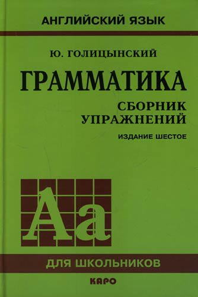

When I studied English, I had a book with hundreds of grammar excercises. It looked like this.
It wasn't enought just to read the grammar rule once. I had to solve tons of excersises to install the rule into my brain.
Learning Python doesn't differ too much from learning English. But for some reason people don't do enough grammar excersises in Python. They go straight to the big projects.
I agree that projects are great. But making project without learning the grammar first is as paintful as surviving in English-speaking country with just a dictionary (given that you don't know English). It is very difficult!
So, we do need grammar books for programming languages.
I'm going to create a great set of grammar excercises for every programming language. This set will be free for everyone and curated by the open source community.
The excerisises will require you to write a function like on codingbat, or a programm like on codeforces. The answer will be tested automatically.
I'm creating the platform, which:
You can help developing the platform. Look through the speak-code repos on github and find the one you'd like to contribute to.
Also you can give me money on patreon to help me pay for the sphere-engine I use for autotesting.
My name is Daria Kolodzey. I'm a girl from Russia and I interned as a software engineer at Google. I also have a personal website kolodzey.ru with links to my social media ;)